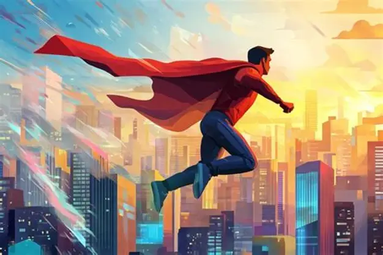
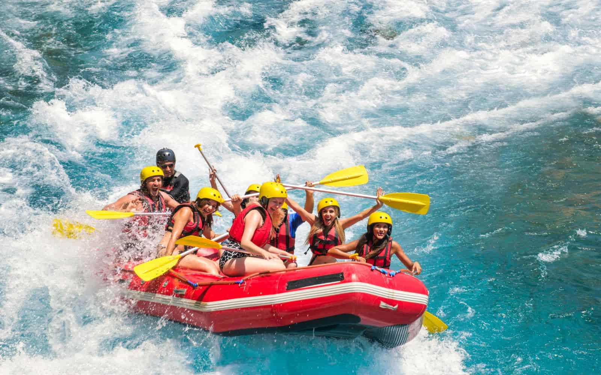
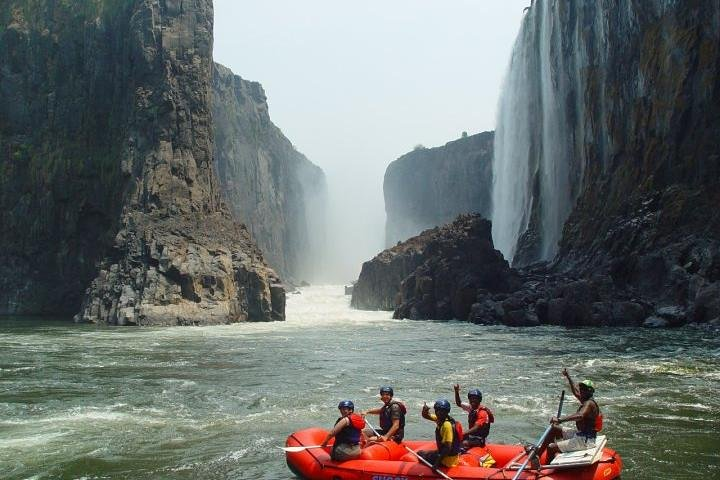
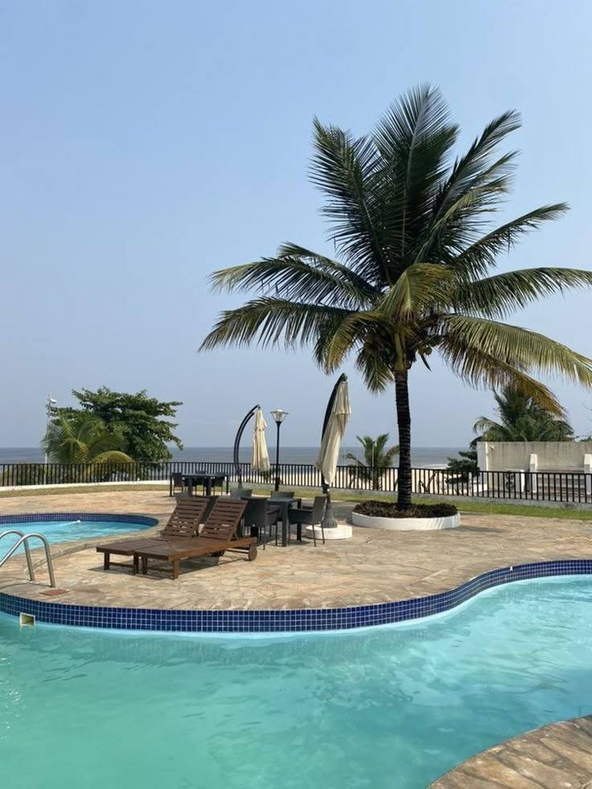
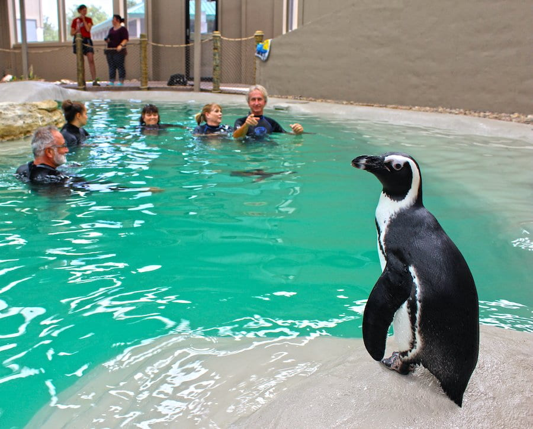
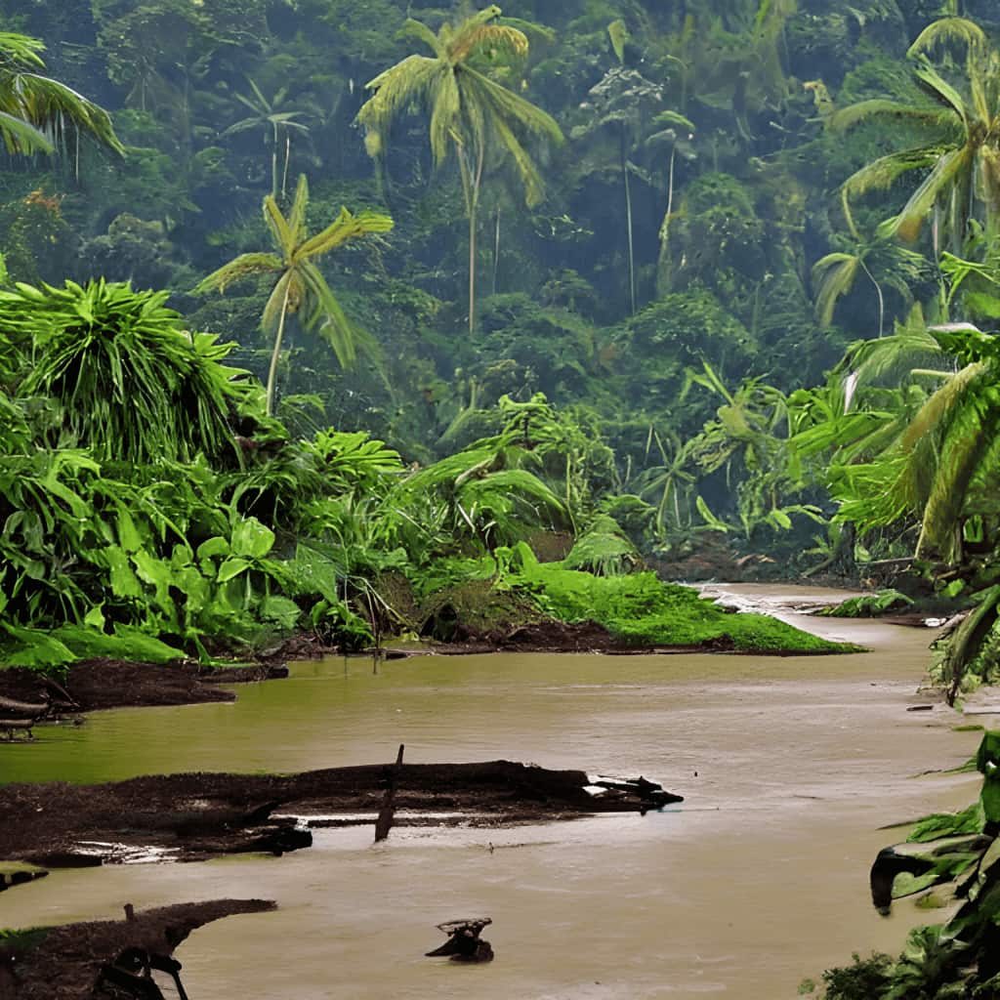

We are a team of passionate adventurers dedicated to providing unforgettable whitewater experiences. Our mission is to connect people with the thrill of nature and fostering love.

Whitewater Adventures
History
Whitewater rafting can be traced back to 1811 when the first recorded attempt to navigate the Snake River in Wyoming was planned. With no

training, experience, or proper equipment, the river was found to be too difficult and dangerous. Hence, it was given the nickname “Mad River.”
Adventure Awaits You!




